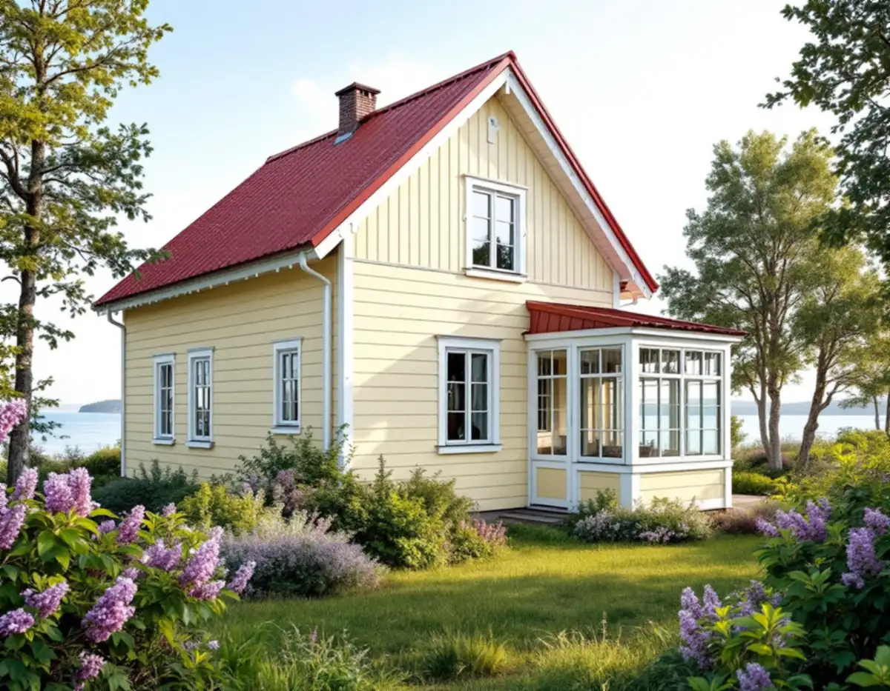
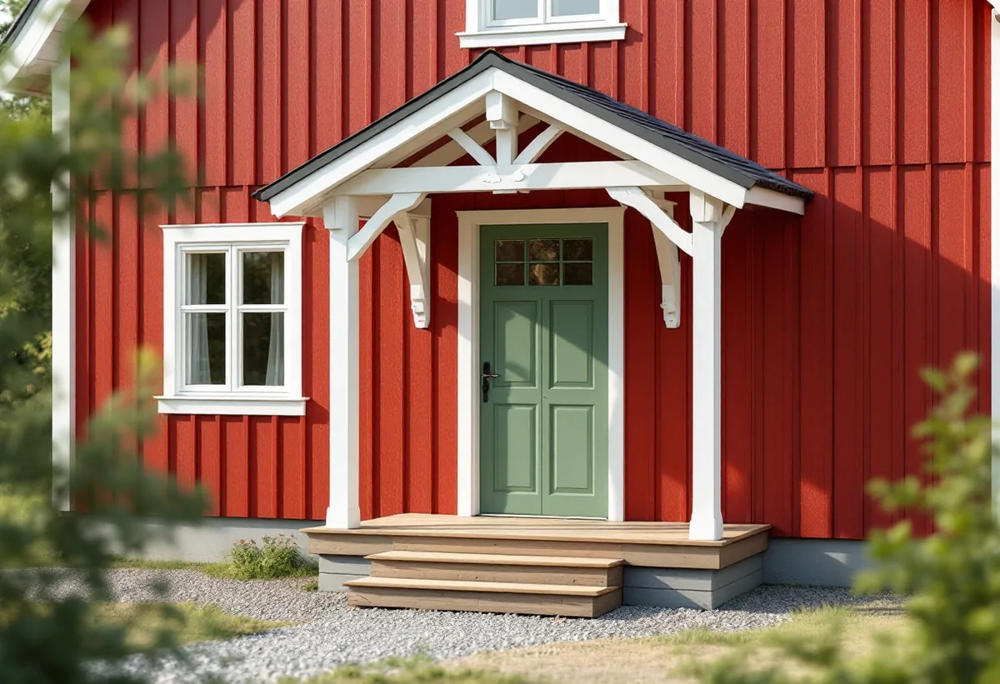

Platsbesök
Vi tittar på huset, tomten och vilken karaktärsmiljö det hör till.
Haninge rymmer sommarnöjen med glasverandor i Dalarö, gårdar med farstukvistar på landsbygden och grupphusområden från 1960- och 70-talen. Kommunens dokument Haninges karaktärsmiljöer ger råd om snickeriet i alla tre. Geal Entreprenad AB bygger och lagar altaner, verandor, trappor och skärmtak i hela Haninge, med gratis platsbesök och skriftligt kostnadsförslag.

I Haninges karaktärsmiljöer beskrivs sommarnöjena från 1860- till 1920-talet som områden med stora villor i trä och varierande arkitektur, med bland annat stora glasverandor och snickarglädje. Dalarö och Smådalarö nämns som exempel. Till de tongivande detaljerna räknas träpanel, spröjsade fönster, torn och brutna tak.
Dokumentet säger att den ursprungliga fönstersättningen ska vara vägledande, och att lusthus, båthus och bryggor ska värnas. För en snickare betyder det att en rötskadad verandastolpe eller ett trasigt lövsågat krön lagas i samma form, och att en spröjsad båge byts mot en likadan och inte mot ett helglas.
Ett lusthus eller en veranda som har stått i hundra år har ofta skador i nedre delen, där vatten blir stående. Vi byter de skadade partierna och sparar resten.

Bland de äldre byggnadstyperna på Haninges landsbygd visar karaktärsmiljöerna dubbelradstugan, med farstukvist, snickarglädje och spegeldörr, och salsbyggnaden med en markerad veranda. Om fönster och dörrar säger dokumentet att de har en starkt karaktärsbärande effekt, att ursprungliga fönster i möjligaste mån bör bevaras och att ursprunglig utformning ska eftersträvas vid byte.
För den agrara miljön ger dokumentet också råd om nya uteplatser. En terrass, altan eller ett inglasat uterum ska vara i proportion till huvudbyggnaden. Altan i kuperad terräng bör undvikas eftersom höga pelare ger ett dominerande intryck, och altanens undersida bör inte kläs in, eftersom volymen då upplevs större.
En ny farstukvist på en gammal gård kan alltså vara rätt val, medan ett stort trädäck på höga stolpar mot åkern sällan är det.
Rekordårens småhus i Haninge finns enligt karaktärsmiljöerna bland annat i Jordbro, Brandbergen, Västerhaninge och Handen, ofta som grupphus med upprepade volymer mot gatan. Mot 1980-talet fick husen åter dekorativa snickerier. Råden är att behålla trädgårdskaraktären, skärma av mot gatan med låg häck eller staket och undvika stora markuppfyllnader och stora altandäck.
Kommunens sida om altan och trädäck anger att ett trädäck i marknivå oftast inte kräver bygglov, och att en altan är lovfri om den är högst 1,8 meter och ligger inom 3,6 meter från byggnaden. Täcker altanerna på tomten tillsammans mer än 50 kvadratmeter ska de följa detaljplanen.
Ett skärmtak kräver bygglov i Haninge om det är fristående, sticker ut mer än 50 centimeter från väggen eller sitter i ett särskilt värdefullt område, enligt kommunens sida om skärmtak. Har du inte använt de 30 kvadratmeter som får byggas till ett en- eller tvåbostadshus utan lov kan skärmtaket rymmas där.
Ett staket med enkel och luftig konstruktion kräver oftast inget lov, men ett tätt staket över 1,2 meter kan göra det. Vid utfart eller korsning får staket och häck inte vara högre än 80 centimeter. Kommunen skriver att den uppdaterar kartan över särskilt värdefulla kulturmiljöer, så tills den är klar ringer vi bygglovsenheten när en fastighet kan vara berörd.
Både altan, skärmtak och staket kan dessutom kräva strandskyddsdispens. Kommunen anger att strandskyddet vanligtvis gäller 100 till 300 meter från kustlinjen, sjöar och större vattendrag, och att dispens kan behövas även när bygget inte kräver lov. Varsamhetskravet gäller också: ändringar och tillägg ska anpassas till byggnaden och miljön runt den, oavsett om de kräver lov eller inte.
Vi tittar på huset, tomten och vilken karaktärsmiljö det hör till.
Vi föreslår vad som kan lagas i befintlig form och vad som behöver bytas.
Vi kontrollerar höjder, utsprång och avstånd mot kommunens gränser.
Du får ett skriftligt förslag med arbete och material på separata rader.
Stolpar, bågar, krön eller trall tillverkas och monteras efter förlagan.
Vi går igenom resultatet med dig och visar vad som behöver underhållas framöver.
Hos Skatteverket ger en altan rotavdrag när den byggs ihop med huset, och att glasa in balkonger och altaner i ett småhus räknas också. Byte och reparation av dörrar och fönster ger avdrag, liksom reparation av entrétrappor. Att bygga eller laga staket ger inget avdrag.
Avdraget är 30 procent av arbetskostnaden, högst 50 000 kr per person och år och högst 75 000 kr tillsammans med rutavdrag. Material och resor ingår inte. Vi drar avdraget direkt på fakturan.
Hur mycket av en veranda eller ett snickeri som går att spara, om detaljer måste tillverkas efter förlaga och hur stor och hög en altan blir påverkar mest. Platsbesöket är gratis och du får ett skriftligt kostnadsförslag.
Altan, väggar, dörrar och inredning.
Snickare i Stockholm →Takbyte, takbesiktning och plåtarbeten.
Takläggare i Haninge →Dalarö, Vendelsö och Brandbergen.
Takrenovering i Haninge →Vakuumtoalett, sluten tank och öarna.
Badrumsrenovering i Haninge →Nytt hus och tillbyggnad i omvandlingsområden.
Byggföretag i Haninge →Tegelvillor, grupphus och panelade gårdar.
Fasadrenovering i Haninge →Sportstugor och fönster i skärgårdsväder.
Fönsterbyte i Haninge →Gårdens fönster, från boningshus till ladugård.
Fönsterrenovering i Haninge →Egnahem, sportstugor och hus i sluttning.
Golvläggare i Haninge →Laga och slipa trägolvet i villan.
Golvslipning i Haninge →Egnahem, grupphus och Dalarö.
Köksrenovering i Haninge →Falsad plåt, sjöbodar och beslag i Haninge.
Plåtslagare i Haninge →Egnahem, grupphus och sommarvillor i Haninge.
Målare i Haninge →Ny tapet och gamla lager i äldre villor.
Tapetsering i Haninge →